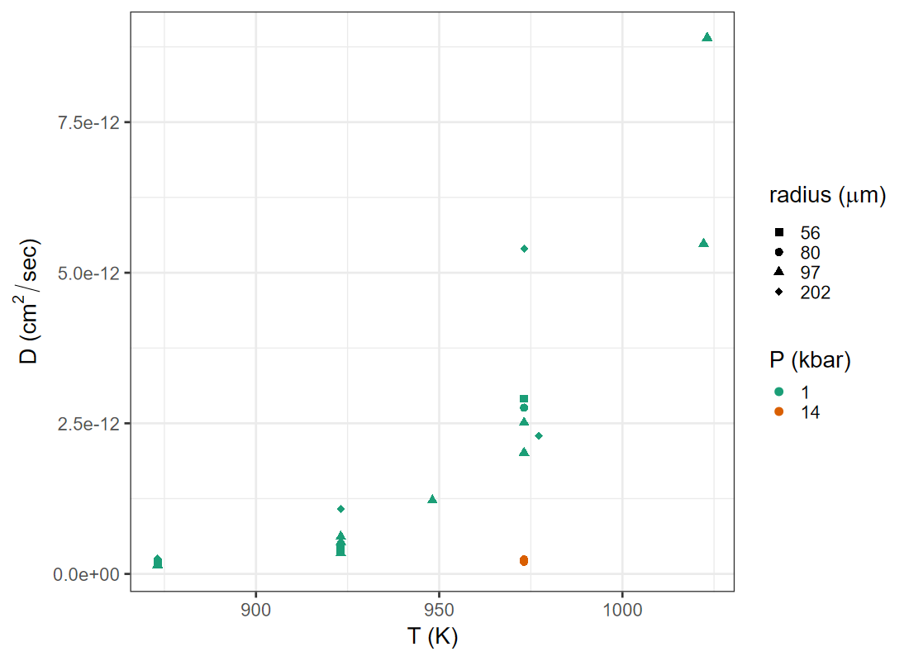

Least Squares
EES 4891/5891
Probability & Statistics for Geosciences
Jonathan Gilligan
Class #19: Friday, March 21 2025
Learning Goals
Learning Goals
Introducing Least Squares
The Basic Problem
- We’ve learned about estimating parameters for probability
distributions from data:
- Univariate data:
- Method of Moments
- Maximum Likelihood Estimation
- Bayesian Methods
- Multivariate Normal
- Estimating mean and covariance matrix
- Univariate data:
- Covariance and correlation tell you that there’s a relationship
between variables,
- Don’t tell you what the relationship is.
- Different relationships can have the same correlation or covariance
- Least-Squares Analysis:
-
Estimate parameters \(\Theta\) for a functional relationship between variables in multivariate data
\[ \begin{align} x_p =& f(x_1, x_2, \ldots, x_{p-1} | \Theta) \\ \Theta =& (\theta_1, \theta_2, \ldots, \theta_k) \end{align} \]
- Bivariate: \(x_2 = f(x_1 | \Theta)\)
-
Ordinary Least Squares
-
Consider \(N\) observations of bivariate data \((x_i, y_i)\):
\[ \left[ \begin{array}{cc} x_1 & y_1 \\ x_2 & y_2 \\ \vdots & \vdots \\ x_N & y_N \end{array} \right] \]
-
Assume a linear relationship:
\[ y_i = \beta_0 + \beta_1 x_i + \varepsilon_i, \] where \(\beta\) are parameters and \(\varepsilon\) represents a random residual.
- \(\varepsilon\) represents the residual variance not explained by \(\beta_0 + \beta_1 x\)
- The problem: Estimate the best values for \(\beta\), given data \((x_i, y_i)\) for \(i \in 1, 2, \ldots N\)
- Criterion for best values: make \(\varepsilon\) as small as possible (“least
squares”).
-
Specifically: minimize
\[ \sum_{i = 1}^N \epsilon_i^2 = \sum_{i = 1}^N (y_i - (\beta_0 + \beta_1 x_i))^2 \]
-
If \(\varepsilon\) is normally distributed (\(\varepsilon \sim \mathcal{N}(0, \sigma)\)), then the maximum-likelihood values for \(\beta\) will minimize \(\sum_i \epsilon_i^2\)
- Ordinary Least Squares is equivalent to Maximum Likelihood.
-
- Criterion for best values: make \(\varepsilon\) as small as possible (“least
squares”).
Multivariate Case
-
More generally, if we have \(p\)-dimensional multivariate data,
\[ \left[ \begin{array}{cc} x_{1,1} & x_{1,2}, & \ldots & x_{1,p} \\ x_{2,1} & x_{2,2}, & \ldots & x_{2,p} \\ \vdots & \vdots & \ddots & \vdots \\ x_{N,1} & x_{N,2}, & \ldots & x_{N,p} \\ \end{array} \right] \]
we use a linear relationship
\[ x_{i, p} = \beta_0 + \sum_{j = 1}^{p-1} \beta_j x_{i,j} + \epsilon_i \]
and find values for \(\beta = (\beta_0, \beta_1, \ldots, \beta_{p-1})\) that minimize the sum of the squares of \(\epsilon_i\)
Least-Squares in R
Least-Squares in R
-
Start by creating fake data with known parameters:
\[ \begin{align} \beta_0 =& 3.5 \\ \beta_1 =& 7.2 \end{align} \]
-
Generate 100 samples with \(y_i = \beta_0 + \beta_1 x_i + \varepsilon_i\), where \(\varepsilon \sim \mathcal{N}(\mu = 0, \sigma = 10)\)
-
-
Use the
lm()function to fit parameters to data:## ## Call: ## lm(formula = y ~ x, data = df) ## ## Residuals: ## Min 1Q Median 3Q Max ## -26.168 -8.699 2.071 6.326 21.451 ## ## Coefficients: ## Estimate Std. Error t value Pr(>|t|) ## (Intercept) 4.6689 2.2190 2.104 0.0379 * ## x 7.4566 0.3834 19.450 <2e-16 *** ## --- ## Signif. codes: 0 '***' 0.001 '**' 0.01 '*' 0.05 '.' 0.1 ' ' 1 ## ## Residual standard error: 11.18 on 98 degrees of freedom ## Multiple R-squared: 0.7942, Adjusted R-squared: 0.7921 ## F-statistic: 378.3 on 1 and 98 DF, p-value: < 2.2e-16
Plotting Least-Squares
- Always plot your data
- Your eyes are better at seeing patterns in plots than interpreting numbers like \(p\)-values
- The
geom_smooth()function can plot the result of a least-squares analysis.- The gray area indicates the 95% confidence interval of the fitted line.
Least-Squares with Real Data
-
Paleoclimate data: tree-ring growth index vs. minimum summer air temperature from the MacKenzie Delta, NW Canada,
- Data from T.J. Porter et al., Quaternary Res. 80, 167 (2013), DOI: 10.1016/j.yqres.2013.05.004.
-
Load the data:
-
Fit parameters to the data:
## ## Call: ## lm(formula = t_min ~ growth_index, data = paleo) ## ## Residuals: ## Min 1Q Median 3Q Max ## -2.52464 -0.62025 -0.03916 0.66740 1.65240 ## ## Coefficients: ## Estimate Std. Error t value Pr(>|t|) ## (Intercept) 3.4417 0.3516 9.789 < 2e-16 *** ## growth_index 2.0820 0.2706 7.694 8.52e-12 *** ## --- ## Signif. codes: 0 '***' 0.001 '**' 0.01 '*' 0.05 '.' 0.1 ' ' 1 ## ## Residual standard error: 0.8676 on 104 degrees of freedom ## Multiple R-squared: 0.3627, Adjusted R-squared: 0.3566 ## F-statistic: 59.2 on 1 and 104 DF, p-value: 8.517e-12
Plot Data
General Least Squares
General Least Squares
- Ordinary least squares models linear relationships between \(x\) and \(y\).
- We can also use least-squares methods for nonlinear relationships
betwen \(x\) and \(y\), as long as there is a linear
relationship between the parameters \(\beta\) and the dependent variable.
-
Polynomial fits
\[ y = \beta_0 + \beta_1 x + \beta_2 x^2 + \beta_3 x^2 + \varepsilon \]
-
Transformed data
\[ \log(y) = \beta_0 + \beta_1 \log(x) + \varepsilon \]
-
- But we can’t fit non-linear relationships between the parameters
and the dependent variable.
-
The following won’t work:
\[ \begin{align} y =& \beta_0 + x^{\beta_1} + \varepsilon \\ y =& \sin( \beta_1 x ) + \varepsilon \end{align} \]
-
- We can also use least-squares methods for nonlinear relationships
betwen \(x\) and \(y\), as long as there is a linear
relationship between the parameters \(\beta\) and the dependent variable.
Example of General Least Squares
-
Diffusion coefficients for 40Ar in biotite at different temperatures
- Data from T.M. Harrison et al., Geomchim. Geocosm. Act. 49, 2461 (1985). DOI: 10.1016/0016-7037(85)90246-7
-
Load the data
## Rows: 21 ## Columns: 5 ## $ run <chr> "CB-100", "m-101", "CB-103… ## $ t <dbl> 973.15, 973.15, 873.15, 92… ## $ a <dbl> 97, 97, 97, 97, 202, 97, 9… ## $ d <dbl> 2.01e-12, 2.51e-12, 1.38e-… ## $ P <dbl> 1, 1, 1, 1, 1, 1, 1, 1, 1,…-
t: temperature (K), -
a: grain radius (μm), -
d: diffusion coefficient (cm2/sec), -
P: pressure (kbar)
-
Digression: Fancy Plotting
- Getting fancy with
ggplot():- To plot discrete colors and shapes, we have to transform numerical data into factors.
- If we don’t like the default shapes or colors R uses, we can use
scale_shape_manual(),scale_color_manual(), etc. to specify the shapes or colors to associate with each level of the factors. - We can put mathematical expressions into labels using
expression()andexpression(paste()).
diffus <- diffus |> mutate(P = factor(P), a = factor(a))
ggplot(diffus, aes(x = t, y = d)) +
geom_point(aes(color = P, shape = a), size = 3) +
scale_color_brewer(palette = "Dark2", name = "P (kbar)") +
scale_shape_manual(values = c("56" = 15, "80" = 16,
"97" = 17, "202" = 18),
name = expression(paste("radius (",
mu * m, ")"))) +
labs(x = "T (K)",
y = expression(paste("D (", cm^2 / sec, ")")))Analyzing the Plot
- The data really don’t look like they fall on a straight line the line.
- Transforming the data may produce a better linear relationship.
- The physics of diffusion suggests that there should be a linear relationship between \(\log(D)\) and \(1 / T\), where \(T\) is the Kelvin temperature.

Transforming Data
-
The physics of diffusion suggests that there should be a linear relationship between \(\log(D)\) and \(1 / T\).
-
\(T\) is close to 1000 K, so transforming \(1000 / T\) gives numbers close to 1.
-
-
Plot transformed data:
p_xform <- ggplot(diffus, aes(x = t_inv, y = log_d)) + geom_point(aes(color = P, shape = a), size = 3) + scale_color_brewer(palette = "Dark2", name = "P (kbar)") + scale_shape_manual(values = c("56" = 15, "80" = 16, "97" = 17, "202" = 18), name = expression(paste("radius (", mu * m, ")")) ) + labs(x = expression(paste("T (", 10^3 / K, ")")), y = expression(paste(log~D, " (", cm^2 / sec, ")")), title = "Transformed Data") p_xform
- 1-kbar data fall close to a straight line.
- 14-kbar data don’t.
General Least Squares in R
\[ \log{D} = \beta_0 + \beta_1 \frac{1000}{T} + \varepsilon \]
##
## Call:
## lm(formula = log_d ~ t_inv, data = diffus)
##
## Residuals:
## Min 1Q Median 3Q Max
## -2.16200 -0.09938 0.14557 0.46267 1.13384
##
## Coefficients:
## Estimate Std. Error t value Pr(>|t|)
## (Intercept) -6.261 3.602 -1.738 0.0983 .
## t_inv -20.259 3.395 -5.967 9.63e-06 ***
## ---
## Signif. codes: 0 '***' 0.001 '**' 0.01 '*' 0.05 '.' 0.1 ' ' 1
##
## Residual standard error: 0.7966 on 19 degrees of freedom
## Multiple R-squared: 0.6521, Adjusted R-squared: 0.6337
## F-statistic: 35.61 on 1 and 19 DF, p-value: 9.628e-06
- The fit is very good for 1-kbar data,
- Poor for 14-kbar data.
- 202 μm grains worse than smaller grains
Weighted Data
Weighted Data
- So far, we have assumed that each observation has the same
measurement errors or uncertainty.
If some data have been measured more accurately than others, we can do weighted least-squares analysis, using a vector of weights \(w\), the same length as the number of observations.
-
Ordinary least-squares minimizes
\[ \sum_{i=1}^N \varepsilon_i^2 = \sum_{i = 1}^N (y_i - (\beta_0 + \beta_1 x)) \]